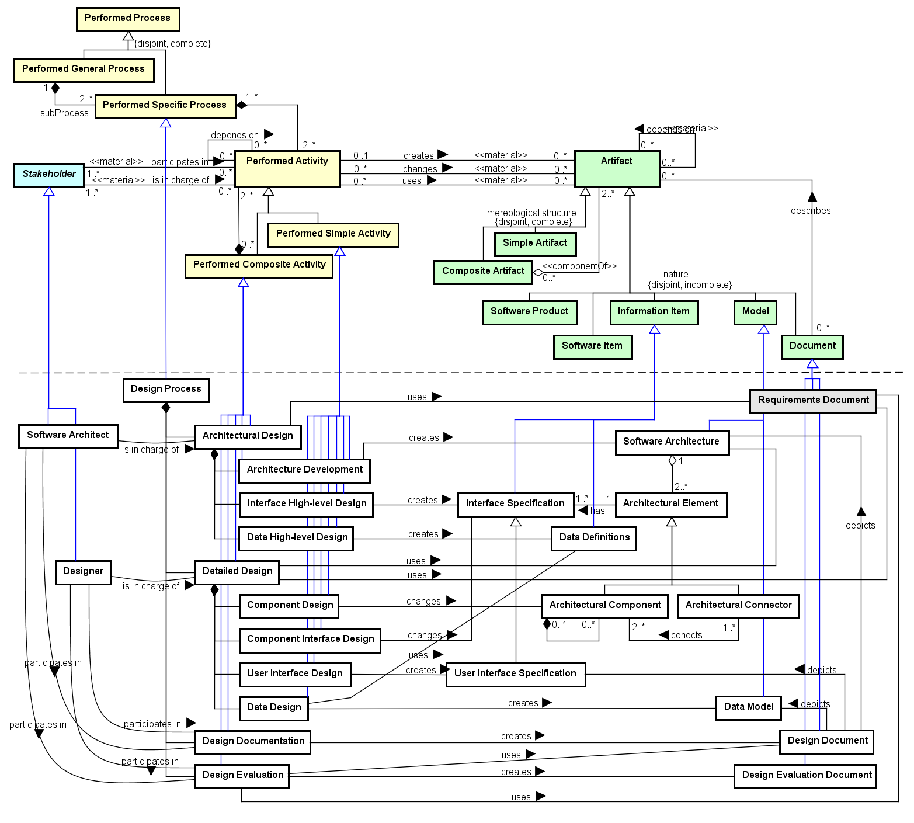

Ex.: data management mechanisms, data distribution.
Ex.: a database schema.
The Design Process Ontology (DPO) aims at representing the activities, artifacts and stakeholders involved in the software Design Process. DPO is in the core of the technical processes in software development, thus it reuses some concepts from other SEON networked ontologies, as well provides some concepts for reusing.
Networked ontologies used by DPO:
| Ontology | Relation | Integration Level |
| SPO - Software Process Ontology | All DPO concepts extend concepts from SPO. | High |
| RSRO - Reference Software Requirements Ontology | DPO reuses an artifact from RDPO. | Low |
Figure 1 presents the conceptual model of the DPO.

Figure 1. DPO conceptual model.
The Design Process is a Process with the purpose of defining the architecture, elements, interfaces, and other characteristics of a software, aiming at its implementation.
Some notions are important for this process. Software Architecture is a model describing the fundamental structures of a software. It is composed of Architectural Elements, which can be a Component, describing a software module, or a Connector, connecting two or more components. Architectural Elements have Interfaces, which can be internal or external. The Design is a refinement process involving several design choices. It starts defining an architecture and follows by detailing each element to the extent it can be implemented.
The Design Process is composed of four main Activities. (1) Architectural Design makes the high-level design choices, defining a Software Architecture and involved elements. Its three sub-activities are Architecture Development, for producing the architecture and specifying its components and connectors; Interface High-level Design, for specifying the interfaces between components and with external elements (users or other systems); and Data High-level Design, for establishing the high-level choices regarding the software data. (2) Detailed Design refines a preliminary software design to the extent that it is sufficiently complete to be implemented. It has four sub-activities: Component Design, for refining each architectural component; Component Interface Design, for detailing each software interface; User Interface Design, specifically for detailing the user interfaces; and Data Design, for producing a detailed Data Model for data storage and management. (3) Design Documentation registers the architectural and detailed design choices made, producing a Design Document. (4) Finally, Design Evaluation evaluates a Design Document, registering the identified issues.
The process has two main Stakeholders, the Software Architect, responsible for making the high-level design choices, and establishing a software architecture; and the Designer, responsible for making the detailed design choices.
The following table shows the definitions for DPO concepts.
| Concept | Definition |
| Architectural Component
|
Architectural Element describing a software module as part of an Architecture.
|
| Architectural Connector
|
Architectural Element connecting two or more Components in an Architecture.
|
| Architectural Design
|
Activity for making the high-level design choices, defining the Software Architecture and involved elements.
|
| Architectural Element
|
Model Element referring to an Architectural Component or Connector, and its Interfaces.
|
| Architecture Development
|
Activity aiming to produce the Software Architecture and specifying its Architectural Components and Connectors.
|
| Component Design
|
Activity for refining each Architectural Component of a software.
|
| Component Interface Design
|
Activity for refining each Interface Specification of a software.
|
| Data Definitions
|
Information Item describing the high-level choices of how the software will manage data.
|
| Data Design
|
Activity for producing a detailed Data Model for data storage and management.
|
| Data High-level Design
|
Activity for establish the high-level choices regarding the software data.
Ex.: data management mechanisms, data distribution. |
| Data Model
|
Model containing the physical and logical decisions on how to manage and storage the software data.
Ex.: a database schema. |
| Design Document
|
Document specifying the design of a software, by depicting the software architecture, components, interfaces and data models, as well as other information regarding the design choices and decisions.
|
| Design Documentation
|
Activity for registering the architectural and detailed design choices and decisions, producing a Design Document.
|
| Design Evaluation
|
Activity for evaluating a Design Document, registering the identified issues.
|
| Design Evaluation Document
|
Document registering the issues identified in a Design Document evaluation.
|
| Design Process
|
Process for defining and specifying a solution to be implemented for a software product, considering the requirements for it. It is a refinement process starting with the software architecture, and going down to the design of its elements, interfaces, and other characteristics of a software, until achieving the design of implementation units.
|
| Designer
|
Stakeholder responsible for making the Detailed Design choices for a software.
|
| Detailed Design
|
Activity for refining a preliminary software design to the extent that it is sufficiently complete to be implemented. [ISO/IEC/IEEE 24765]
|
| Interface High-level Design
|
Activity for specifying the Interfaces between Architectural Components and with external elements (users or other systems).
|
| Interface Specification
|
Information Item describing an internal or external interface of a software architecture.
|
| Software Architect
|
Stakeholder responsible for designing the Software Architecture.
|
| Software Architecture
|
Model describing the fundamental structures of a software, including its components, how they are connected, and its internal and external interfaces.
|
| User Interface Design
|
Activity for specifying the User Interfaces in detail.
|
| User Interface Specification
|
Interface Specification focusing on the human-computer interaction.
|
<<subkind>>Architectural Component |
Architectural Component (0..1) <>-- (0..*) Architectural Component
Component Design changes Architectural Component
Architectural Connector (1..*) conects (2..*) Architectural Component
<<subkind>>Architectural Connector |
Architectural Connector (1..*) conects (2..*) Architectural Component
<<event>>Architectural Design |
Architectural Design uses Requirements Document
Architectural Design <>-- Architecture Development
Architectural Design <>-- Data High-level Design
Architectural Design <>-- Interface High-level Design
Design Process <>-- Architectural Design
Software Architect is in charge of Architectural Design
<<subkind>>Architectural Element |
Architectural Element (1..1) has (1..*) Interface Specification
Software Architecture (1..1) <>-- (2..*) Architectural Element
<<event>>Architecture Development |
Architecture Development creates Software Architecture
Architectural Design <>-- Architecture Development
<<event>>Component Design |
Component Design changes Architectural Component
Detailed Design <>-- Component Design
<<event>>Component Interface Design |
Component Interface Design changes Interface Specification
Detailed Design <>-- Component Interface Design
<<subkind>>Data Definitions |
Data High-level Design creates Data Definitions
Data Design uses Data Definitions
<<event>>Data Design |
Data Design creates Data Model
Data Design uses Data Definitions
Detailed Design <>-- Data Design
<<event>>Data High-level Design |
Data High-level Design creates Data Definitions
Architectural Design <>-- Data High-level Design
<<subkind>>Data Model |
Design Document depicts Data Model
Data Design creates Data Model
<<subkind>>Design Document |
Design Document depicts Software Architecture
Design Document depicts User Interface Specification
Design Document depicts Data Model
Design Documentation creates Design Document
Coding uses Design Document
Design Evaluation uses Design Document
Code Review uses Design Document
<<event>>Design Documentation |
Design Documentation creates Design Document
Designer participates in Design Documentation
Design Process <>-- Design Documentation
Software Architect participates in Design Documentation
<<event>>Design Evaluation |
Design Evaluation creates Design Evaluation Document
Design Evaluation uses Design Document
Design Evaluation uses Requirements Document
Designer participates in Design Evaluation
Design Process <>-- Design Evaluation
Software Architect participates in Design Evaluation
<<subkind>>Design Evaluation Document |
Design Evaluation creates Design Evaluation Document
<<event>>Design Process |
Design Process <>-- Architectural Design
Design Process <>-- Detailed Design
Design Process <>-- Design Documentation
Design Process <>-- Design Evaluation
<<role>>Designer |
Designer is in charge of Detailed Design
Designer participates in Design Documentation
Designer participates in Design Evaluation
<<event>>Detailed Design |
Detailed Design <>-- Component Design
Detailed Design <>-- Component Interface Design
Detailed Design <>-- Data Design
Detailed Design <>-- User Interface Design
Detailed Design uses Requirements Document
Detailed Design uses Software Architecture
Designer is in charge of Detailed Design
Design Process <>-- Detailed Design
<<event>>Interface High-level Design |
Interface High-level Design creates Interface Specification
Architectural Design <>-- Interface High-level Design
<<subkind>>Interface Specification |
Component Interface Design changes Interface Specification
Interface High-level Design creates Interface Specification
Architectural Element (1..1) has (1..*) Interface Specification
<<role>>Software Architect |
Software Architect is in charge of Architectural Design
Software Architect participates in Design Documentation
Software Architect participates in Design Evaluation
<<subkind>>Software Architecture |
Software Architecture (1..1) <>-- (2..*) Architectural Element
Architecture Development creates Software Architecture
Design Document depicts Software Architecture
Detailed Design uses Software Architecture
<<event>>User Interface Design |
User Interface Design creates User Interface Specification
Detailed Design <>-- User Interface Design
<<subkind>>User Interface Specification |
Design Document depicts User Interface Specification
User Interface Design creates User Interface Specification